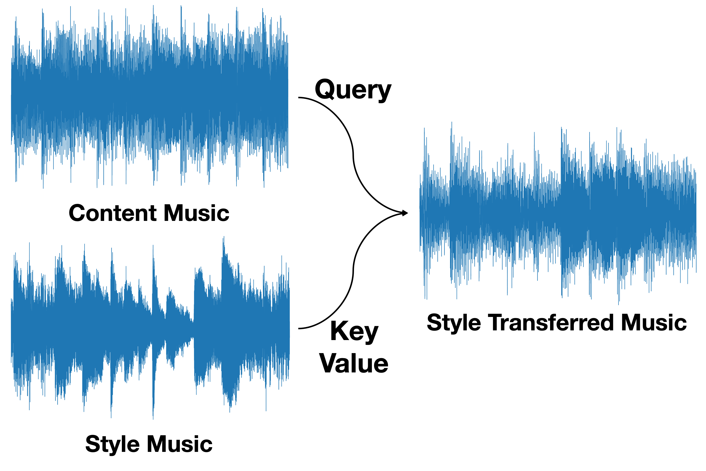
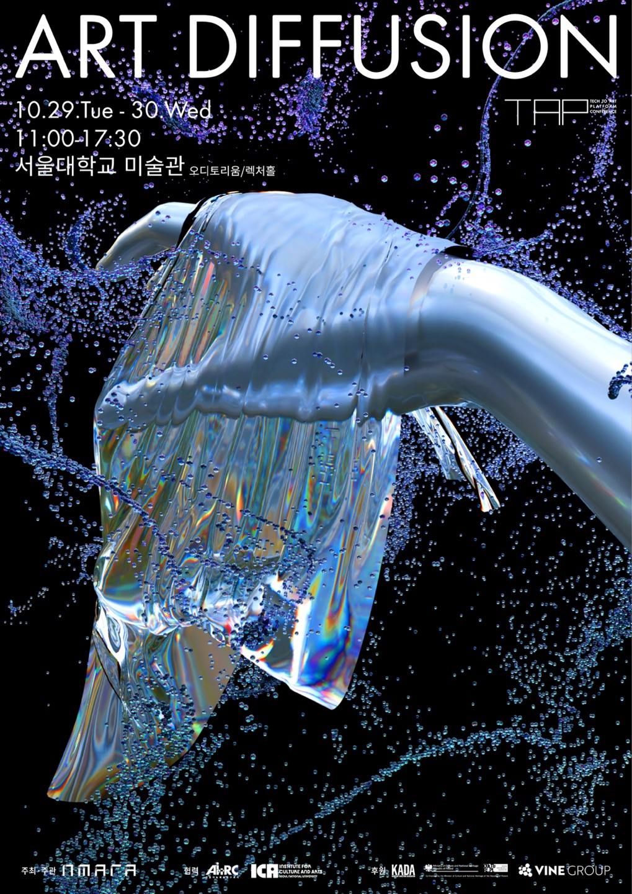
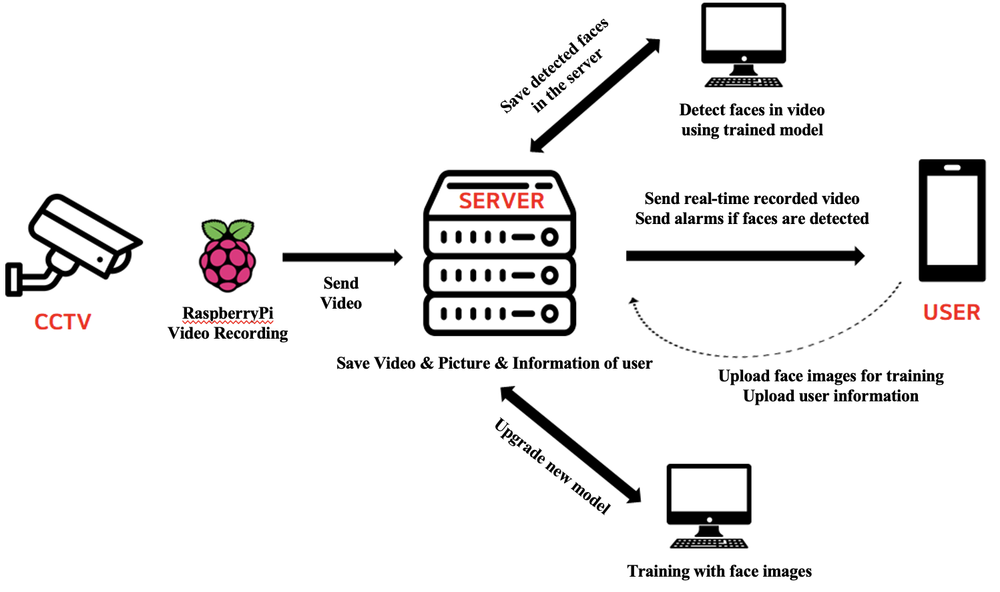

|
Sooyoung Kim
I am an incoming CS Ph.D. student at Rutgers University, advised by Vladimir Pavlovic.
I received M.S. in Brain and Cognitive Sciences at Seoul National University, under the supervision of Prof.Jiook Cha. Since my Master's program, I have been fortunate to be advised by Prof.Shinjae Yoo and Prof.Yuewei Lin at Brookhaven National Laboratory (BNL). Previously, I received B.S. in Computer Science and Engineering at Ewha Womans University.
My research interests lie in Computer Vision, Generative AI, and Human-AI. I am interested in understanding and generating images, videos, and 3D/4D content, particularly applications to narrative-driven multimedia like movies. I aim to develop deep learning models that are (i) controllable for human interaction, (ii) visually coherent, and capable of (iii) perceiving the visual, semantic, and physical representation of the real world.
|

|
News🔥
| Feb 2025 |
Invited as a reviewer from journal Pattern Recognition and IEEE Computational Intelligence Magazine. |
| Dec 2024 |
Our paper, Revisiting Your Memory, is accepted to the AAAI 2025 Workshop on AI for Music. |
| Oct 2024 |
Our work, "The Recollection of Your Most Cherished Experiences utilizing AI and Neural Signals", will be presented at the Tech to Art Platform (TAP) International Conference Prequel, the ART DIFFUSION. |
| Oct 2024 |
Our team won the GRAND prize 🏅 at the AI & Art Hackathon. |
| Oct 2024 |
Started working as an AI researcher with Planningo via AI research Partnership. |
| Sep 2024 |
Selected to participate in the AI x Art Hackathon hosted by the AI Art Research Center in Seoul, Korea. |
| Aug 2024 |
Invited for a talk on the brain decoding project at Seoul National University. |
| Dec 2023 |
Our AesFA paper got accepted to AAAI 2024. |
| Aug 2023 |
I received M.S. at Seoul National University. I will continue doing research at ConnectomeLab. |
Research In Progress
(* denotes equal contribution)

|
An Instance-Adaptive Photorealistic Style Optimization for Relightful Image Harmonization
Planningo: AI-startup transforming the landscape of advertising photography and commercial videography
My goal is to develop image harmonization models for visual coherence in commercial photography service Photio. As there is an incongruence between AI-generated backgrounds and original advertising photography / commercial videography during synthesis, we fine-tuned the synthesis process by matching the lighting conditions of AI-generated backgrounds with those present in original commercial photography. This approach aims to enhance the visual coherence of images, ultimately benefiting the commercial AI photography industry.
|

|
Attention Guidance Enables A Composable Brain-To-Text Decoding
Sooyoung Kim*, Joonwoo Kwon*, Mincheol Park*, Jungwoo Seo, Won Woo Ro, Shinjae Yoo, Suhyun Kim, Yuewei Lin, Jiook Cha
We present a novel brain-to-text/image decoding framework that enables composable prompt modulation using brain signals. The two-stream hypothesis is a well-known theory in neuroscience that explains how the brain processes visual information through two pathways: the ventral pathway, which identifies "what" an object is (shape, color, and identity), and the dorsal pathway, which determines "where" the object is (its position and motion in space). Inspired by this, we map these pathways to corresponding image features. Our unified brain encoding module guides object recognition and positioning using diffusion models, with brain-induced attention guidance modifying LDM cross-attention layers during inference, without additional fine-tuning.
|

|
An Aesthetically Enhanced Brushstrokes Parameterization for Neural Style Transfer
Joonwoo Kwon*, Sooyoung Kim*, Seungjun Lee, Shinjae Yoo, Yuewei Lin, Jiook Cha
We suggest the neural style transfer framework by leveraging the Navier-Stokes equations for physical representations of parameterized brushstrokes.
|
Publications
|

|
A Training-Free Approach for Music Style Transfer with Latent Diffusion Models
Sooyoung Kim*, Joonwoo Kwon*, Heehwan Wang*, Shinjae Yoo, Yuewei Lin, Jiook Cha
Preprint.
ArXiv
|

|
Macro2Micro: A Rapid and Precise Cross-modal Magnetic Resonance Imaging Synthesis using Multi-scale Structural Brain Similarity
Sooyoung Kim*, Joonwoo Kwon*, Junbeom Kwon, Sangyoon Bae, Yuewei Lin, Shinjae Yoo, Jiook Cha
Preprint
ArXiv
|

|
Revisiting Your Memory: Reconstruction of Affect-Contextualized Memory via EEG-guided Audiovisual Generation
Joonwoo Kwon*, Heehwan Wang*, Jinwoo Yi*, Sooyoung Kim*, Shinjae Yoo, Yuewei Lin, Jiook Cha
AAAI 2025 Workshop on AI for Music
ArXiv
|

|
AesFA: An Aesthetic Feature-Aware Arbitrary Neural Style Transfer
Joonwoo Kwon*, Sooyoung Kim*, Shinjae Yoo, Yuewei Lin, Jiook Cha
AAAI, 2024 (23.75% acceptance rate; 2342/12100)
ArXiv
/
Project page
/
Code
|

|
Designing Software Creation: Using UML Diagrams
Park, H.*, Kim, Y.*, Kim, Y.*, Ji, H.*, Oh, J., Nam, H., Lee, S., Kim, S., Choi, S., Oh, Y., Huh, J., Song, D.
Published textbook, 2023
Book
|
Projects
|

|
The Recollection of Your Most Cherished Experiences utilizing AI and Neural Signals
The Grand Prize 🏅 at AI & Art Hackathon, AI Art Research Center, SNU
Sooyoung Kim, Joonwoo Kwon, Heehwan Wang, Jinwoo Yi
Presentation Slide
We proposed a multimodal AI framework for synthesizing personalized videography (video + music) utilizing generative AI and neural signals (EEG). In this project, we sought to help people recollect, and reexperience their most cherished memories. To accomplish this, we collected a dataset, which integrates multimodal data such as images, text, and corresponding brain signals (EEG) to decode dynamic affect. Our work will be presented at the Tech to Art Platform (TAP) International Conference Prequel.
|

|
Samsung Advanced Institute of Technology Research Capstone
Sooyoung Kim, Joonwoo Kwon
Project slide / Code
Semiconductor quality assurance is highly inefficient and costly because its components are too extremely small to inspect. Therefore, we developed an Image-to-Image Translation model that synthesizes 3D depth maps from 2D Scanning Electron Microscope (SEM) images to ensure that semiconductors are produced as intended.
|

|
Mitigating Unwanted Background Biases with Background Data Augmentation
Jaeheyoung Jeon, Sooyoung Kim, Jaehwan Lim
Paper / Code
We conducted background augmentation techniques using various backgrounds (RGB, black, mean, and human-selected) during training to reduce biases in image classification and object detection.
|
|

|
A Real-Time Face Detecting AI Surveillance Camera
Sooyoung Kim, Heajin Lee, Suyeon Kim
Presentation slide / Code1 / Code2 / Poster / Video
We developed a smartphone application that identifies the faces of individuals in front of a household and notifies users of the presence of unknown persons in real-time via a security camera affixed to the door.
|
Honors & Awards 🏆
Grand Prize at AI x Art Hackathon, Oct 2024
BrainKorea21 Four Scholarship, 2021–2022
2020 4th Seoul Innovation Challenge, Jan 2020 – Sep 2020
The 9th Ewha Festival for Business Plan, Mar 2019 – Dec 2019
EWHA Scholarship, 2018-2020
EWHA Merit-Based Scholarship (full tuition) - Awarded to the top 10% of students upon admission, 2017
About Me 🎨

|
I like swimming a lot, as my first name "수영; Sooyoung" sounds the same as "swimming" in Korean.
I also love movies and dramas with dynamic stories, I am especially a big fan of "The Good Place", a TV series about the afterlife with a philosophical and comedic twist, and "Brooklyn Nine-Nine", an American comedy series about detectives who police the NYPD's 99th Precinct. I really love both discussing movie interpretations and imagining alternative movie endings with other people.
|
Last updated on April 21, 2025
Referred to template taken from here.
|
|